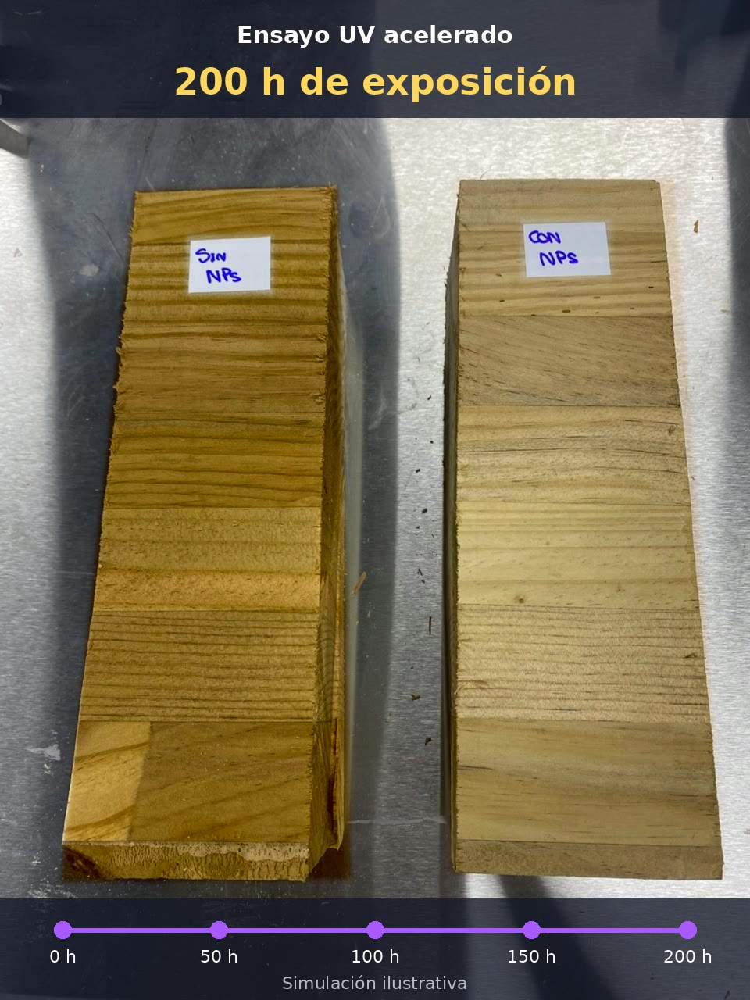

NC DOINGNanotecnología aplicada a madera
Ensayo UV acelerado
Así probamos
la protección UV
Ensayo de envejecimiento acelerado en madera
¿Qué evalúa este ensayo?
1
Dos muestras
comparablesMadera de iguales características: una sin tratar y otra con nanopartículas.2
Radiación UV
aceleradaUna cámara de laboratorio reproduce en horas la exposición solar.3
Comparación
visualSe observa el cambio de color de cada muestra a medida que pasan las horas.
01
Etapa
Preparación
de muestras
Dos bloques de madera de las mismas características: uno sin tratamiento y otro tratado con nanopartículas NC DOING.

SINNPs
CONNPs
02
Etapa
Equipo de
ensayo UV
Cámara de envejecimiento acelerado (Accelerated Weathering Tester) con controlador digital de ciclo y temperatura.
Radiación UV
Ciclo controlado

Cámara UV

Controlador
03
Etapa
Carga en
la cámara
Ambas muestras se ubican lado a lado sobre la bandeja, con la misma exposición a la radiación.

Muestras dentro de la cámara UV
04
Etapa
Exposición
y resultado
Se compara el color de la madera a medida que aumentan las horas de exposición UV.
Izquierda · Sin NPs
Derecha · Con NPs

SINNPs
CONNPs
FINAL DEL ENSAYO200 hEstado de ambas muestras tras la exposición UV acelerada.

SINNPs
CONNPs
INICIO DEL ENSAYO0 hPunto de partida: ambas muestras sin exposición UV.
Menos cambio de color
con nanopartículas NC DOING
Comparación visual en ensayo UV acelerado
Simulación ilustrativa. Resultados sujetos a las condiciones del ensayo.